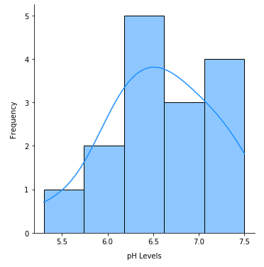

| PolarSPARC |
Introduction to Statistics - Part 5
| Bhaskar S | 08/08/2021 |
In Part 4 of the series, we introduced the point estimation of Population proportion and the population statistics using the Student's T distribution and the Chi-Square distribution.
In this part of the series, we will venture into the world of Hypothesis Testing.
Basic Definitions
A Hypothesis is a statement that something is TRUE.
A Hypothesis Test is the statistical process that uses the test statistic about a population to verify or reject the validity of the population parameter. In other words, it is a test to evaluate two mutually exclusive statements about the population and determines which statement the sample data supports.
The following are the two mutually exclusive statements that are verified:
The Null Hypothesis, which is denoted by the symbol \(H_0\), is the initial claim that something is true and indicates that there is no change or difference between the population parameter (such as the mean, etc.) and the specified value. In other words, the null hypothesis always states that the parameter of interest is equal to the specified value
The Alternate Hypothesis, which is denoted by either the symbol \(H_a\) or \(H_1\), and is chosen when the null hypothesis is rejected. It indicates that there is a change or difference between the population parameter (such as the mean, etc.) and the specified value. In other words, the alternate hypothesis states that the parameter of interest is less than, greater than, or simply not equal to the specified value
The Significance Level, which is denoted by the symbol \(\alpha\), is related to confidence level and is the probability for rejecting the null hypothesis when the null hypothesis is true. It defines how strongly the sample evidence must contradict the null hypothesis before one can reject the null hypothesis for the population. As indicated, the significance level \(\alpha = 1 - c\), where c is the confidence level. Typical values for \(\alpha\) are 0.05 or 0.01.
A p-value is the probability of observing an extreme result (by random chance) from a statistical experiment, assuming the null hypothesis is true. In other words, the p-value is used to determine if the outcome of an experiment is statistically significant. A low p-value means that there is a very low likelihood that this outcome was as a result of luck. The smaller the p-value, the stronger the evidence that one should reject the null hypothesis. In other words, if the p-value is less than or equal to the significance level, we reject the null hypothesis. By convention, if a p-value is less than 0.05, it is a statistically significant observation.
Note that the p-value is related to the critical value \(z_c\) (the minimum cut off point) that we learnt about in Part 3. Critical values are used as a threshold for interpreting the result of a statistical test. The p-value is the probability of obtaining scores beyond the critical value (the minimum cut off point). The sample test statistics of the population beyond the critical value are called the Rejection Region. In other words, it is the region of the normal curve that relates to the minimum cut off point where the null hypothesis can be REJECTED.
A Type I Error occurs when the null hypothesis is REJECTED when in fact it is TRUE.
A Type II Error occurs when the null hypothesis is NOT rejected when in fact it is FALSE.
The type I or type II error can occur because we are making a decision based on the sample statistic versus the population parameter.
Hypothesis Testing
The following are the steps for performing a hypothesis test:
State the null hypothesis \(H_0\)
State the alternate hypothesis \(H_a\)
Decide on the significance level \(\alpha\)
Collect the sample and compute the test statistic using the sample
Determine the critical value(s) (or the p-value)
If the computed test statistic is beyond the critical value, then reject the null hypothesis \(H_0\)
The null hypothesis \(H_0\) always uses the EQUALS condition when expressing the relationship between the parameter of interest and the specified parameter value.
The condition that expresses the alternative hypothesis depends on the purpose of the hypothesis test. There are three possible choices, which are as follows:
If the primary concern is deciding whether a population parameter (such as the mean \(\mu\)) is less than a specified value k, the alternative hypothesis is expressed using the LESS THAN condition, denoted as \(H_a: \mu \lt k\). This entails performing a left-tailed test
The following illustration shows the normal curve with the left-tailed rejection region:
If the primary concern is deciding whether a population parameter (such as the mean \(\mu\)) is greater than a specified value k, the alternative hypothesis is expressed using the GREATER THAN condition, denoted as \(H_a: \mu \gt k\). This entails performing a right-tailed test
The following illustration shows the normal curve with the right-tailed rejection region:
If the primary concern is deciding whether a population parameter (such as the mean \(\mu\)) is different from a specified value k, the alternative hypothesis is expressed using the NOT EQUAL condition, denoted as \(H_a: \mu \ne k\). This entails performing a two-tailed test
The following illustration shows the normal curve with the two-tailed rejection region:
In all the cases, if the p-value is < \(\alpha\), we REJECT the null hypothesis.
Hypothesis Testing - One Population Mean
One-Mean z-Test
The one-mean z-test method is used to perform a hypothesis test for validating the population mean (given the sample mean) when the population standard deviation is known and when either the sample distribution is normal or the sample size is greater than or equal to 30.
Let us now solve a problem using the left-tailed test.
| Example-1 | The recommended daily intake of calcium for adults (ages 19-50 years) is 1000 mg per day. A random sample of 20 adults with incomes below the poverty level gives the daily calcium intakes as follows (in mg): 875, 625, 950, 850, 925, 850, 950, 1175, 975, 825, 775, 825, 1050, 975, 1100, 975, 1325, 875, 1075, and 800 respectively. At the \(5\%\) significance level, do the data provide sufficient evidence to conclude that the mean calcium intake of all adults with incomes below the poverty level is less than the recommended intake of 1000 mg? Assume that \(\sigma\) = 125 mg. |
|---|---|
|
Given the sample size n = 20. The sample mean \(\bar{x}\) is computed by adding all the sample intakes and dividing by n. That is, \(\bar{x} = 938.75\). Null hypothesis: \(H_0: \mu = 1000\) Alternate hypothesis: \(H_a: \mu \lt 1000\) Given the significance level \(\alpha = 0.05\) and the population standard deviation \(\sigma = 125\). We know \(z = \Large{\frac{\bar{x} - \mu}{\sigma/\sqrt{n}}}\) = \(\Large{\frac{938.75 - 1000}{125/\sqrt{20}}}\) \(\approx\) -2.19. In this situation, the hypothesis test is deciding if the population mean is less than the recommended intake. Hence, this is a left-tailed test. For \(\alpha = 0.05\), the critical value from the z-table is \(z_c = -1.64\). Since the computed standardized test statistic (z) is beyond the critical value \(z_c\), we REJECT the null hypotesis \(H_0\). Therefore, at the \(5\%\) significance level, the sample data provides sufficient evidence to conclude that the mean calcium intake of all adults with incomes below the poverty level is less than the recommended intake of 1000 mg. One could also use the p-value to compare against the significance level \(\alpha\) to make a decision. The p-value corresponding to the test statistic z = -2.19 (from the z-table) is \(\approx 0.0142\). Since the p-value is less than \(\alpha = 0.05\), we can REJECT the null hypotesis \(H_0\). |
|
Next, let us now solve a problem using the right-tailed test.
| Example-2 | A survey collects information on the retail prices of science books and and determines the mean retail price of all science books is \($78\). The retail prices for 20 randomly selected science books are as follows: 82.50, 80.25, 77.50, 74.50, 77.75, 74.25, 80.25, 67.75, 101.00, 80.25, 72.75, 74.50, 88.25, 77.50, 77.50, 82.75, 77.25, 91.50, 83.00, and 91.50 respectively. At the \(1\%\) significance level, do the data provide sufficient evidence to conclude that the mean retail price of all science books has increased from the mean of \($78\) ? Assume that the population standard deviation of prices for the science books is \($7.50\). |
|---|---|
|
Given the sample size n = 20. The sample mean \(\bar{x}\) is computed by adding all the prices from the sample and dividing by n. That is, \(\bar{x} = 80.625\). Null hypothesis: \(H_0: \mu = 78\) Alternate hypothesis: \(H_a: \mu \gt 78\) Given the significance level \(\alpha = 0.01\) and the population standard deviation \(\sigma = 7.50\). We know \(z = \Large{\frac{\bar{x} - \mu}{\sigma/\sqrt{n}}}\) = \(\Large{\frac{80.625 - 78}{7.50/\sqrt{20}}}\) \(\approx\) 1.57. In this situation, the hypothesis test is deciding if the population mean has increased or greater. Hence, this is a right-tailed test. For \(\alpha = 0.01\), the critical value from the z-table for (1 - 0.01) (since it is a right-tailed test) is \(z_c = 2.33\). Since the computed standardized test statistic (z) is below the critical value \(z_c\), we FAIL to reject the null hypotesis \(H_0\). Therefore, at the \(1\%\) significance level, the sample data does not provide sufficient evidence to conclude that the mean retail price of all science books has increased. One could also use the p-value to compare against the significance level \(\alpha\) to make a decision. The p-value corresponding to the test statistic z = 1.57 (from the z-table) is \(\approx 0.058\). Since the p-value is greater than \(\alpha = 0.01\), we FAIL to reject the null hypotesis \(H_0\). |
|
Finally, let us now solve a problem using the two-tailed test.
| Example-3 | Several cable providers advertise that their rates are lower than Acme's and as a result their bills will be lower. Acme has responded by arguing that there will be no difference in billing for the average consumer. Suppose that a data analyst working for Acme determines that the mean and standard deviation of monthly bills to customers is \(\$21.50\) and \(\$3.75\), respectively and takes a random sample of 100 customers and recalculates their last month’s bill using the rates quoted by a leading competitor to arrive at a sample mean of \(\$22.00\), can we conclude with a \(95\%\) confidence level that there is a difference between the average Acme bill and that of the leading competitor. |
|---|---|
|
Given the sample size n = 100 and the sample mean \(\bar{x} = 22.00\). Null hypothesis: \(H_0: \mu = 21.50\) Alternate hypothesis: \(H_a: \mu \ne 21.50\) Given the confidence level \(c = 95\%\), the significance level \(\alpha = 1 - c = 0.05\) and the population standard deviation \(\sigma = 3.75\). We know \(z = \Large{\frac{\bar{x} - \mu}{\sigma/\sqrt{n}}}\) = \(\Large{\frac{22.00 - 21.50}{3.75/\sqrt{100}}}\) \(\approx\) 1.33. In this situation, the hypothesis test is deciding if there is a difference between the average Acme bill and that of the leading competitor. Hence, this is a two-tailed test. For \(\alpha = 0.05\), the critical values from the z-table for -0.025 and 0.025 (since it is a two-tailed test) are \(z_c = -1.96\) and \(z_c = 1.96\). Since the computed standardized test statistic (z) is below the critical values \(z_c = 1.96\) and \(z_c = -1.96\), we FAIL to reject the null hypotesis \(H_0\). Therefore, can we conclude with a \(95\%\) confidence level that there is a NO difference between the average Acme bill and that of the leading competitor. One could also use the p-value to compare against the significance level \(\alpha\) to make a decision. The p-value corresponding to the test statistic z = 1.33 (from the z-table) is \(\approx 0.091\). Since this is a two-tailed test, the p-value is 2 times the probability, which is \(\approx 0.182\). Since the p-value is greater than \(\alpha = 0.05\), we FAIL to reject the null hypotesis \(H_0\). |
|
One-Mean t-Test
In real-life situations, the population parameter - the standard deviation \(\sigma\) is not known. In these situations, the one-mean t-test method is used to perform a hypothesis test for validating the population mean (given the sample mean) when the sample size is less than 30 or the sample distribution is normal.
Let us now solve a problem using the left-tailed test.
| Example-4 | Banks often monitor the financial health of companies to which they have extended commercial loans by measuring their debt-to-equity ratio. If this ratio is too high, it is one indication of financial instability. In order to reduce risk, a large financial bank has decided to initiate a policy limiting the mean debt-to-equity ratio for its portfolio of commercial loans to being less than 1.5. To perform the hypothesis test, the bank randomly selects a sample of 15 of its commercial loan accounts. Audits of these companies result in the following debt-to-equity ratios: 1.33, 1.61, 1.45, 1.37, 1.74, 1.29, 1.31, 1.06, 1.33, 1.22, 1.31, 1.45, 1.18, 1.13, and 1.25 respectively, which is normally distributed. The bank wants to assess whether the mean debt-to-equity ratio of its commercial loan portfolio is less than 1.5 using a .01 level of significance. |
|---|---|
|
Given the sample size n = 15 and it is normally distributed. The sample mean \(\bar{x}\) is computed by adding all the sample debt-to-equity ratios and dividing by n. That is, \(\bar{x} \approx 1.335\). Null hypothesis: \(H_0: \mu = 1.5\) Alternate hypothesis: \(H_a: \mu \lt 1.5\) In this situation, the hypothesis test is deciding if the mean is less than 1.5. Hence, this is a left-tailed test. Given the significance level \(\alpha = 0.01\). The sample standard deviation s is computed using the equation \(s = \Large{\sqrt{\frac{\Sigma{(x - \bar{x})^2}}{n - 1}}}\). That is s \(\approx = 0.1699\). We know \(t = \Large{\frac{\bar{x} - \mu}{s/\sqrt{n}}}\) = \(\Large{\frac{1.335 - 1.5}{0.1699/\sqrt{15-1}}}\) \(\approx\) -3.7546. For \(\alpha = 0.01\), the critical value from the t-table for d.f. = 14 is \(t_c \approx -2.6244\). Since the computed standardized test statistic (t) is beyond the critical value \(t_c\), we REJECT the null hypotesis \(H_0\). Therefore, at the 0.1 significance level, the sample data provides sufficient evidence to conclude that the mean debt-to-equity ratio of companies to which the bank has extended commercial loans is less than 1.5. One could also use the p-value to compare against the significance level \(\alpha\) and degrees of freedom (d.f.) to make a decision. The p-value corresponding to the test statistic t = -3.7546 (from the t-table) is \(\approx 0.0011\). Since the p-value is less than \(\alpha = 0.01\), we can REJECT the null hypotesis \(H_0\). |
|
Next, let us now solve a problem using the right-tailed test.
| Example-5 | The burning of fossil fuels has resulted in the mountain lakes around the world to become acidic. A lake is classified as nonacidic if it has a pH greater than 6. The following is the sample of the pH levels from 15 mountain lakes: 7.1, 6.3, 6.5, 7.5, 5.3, 6.8, 7.3, 6.2, 6.6, 7.3, 6.8, 6.7, 6.2, 6.1, and 5.9 respectively. At the significance level of \(5\%\), does the data provide sufficient evidence to conclude that the mountain lakes are nonacidic. |
|---|---|
|
The following illustration shows the distribution of the sample pH levels: 
Sample Distribution
Given the sample size n = 15 and from the above illustration, we can infer that the distribution is approximately normal. The sample mean \(\bar{x}\) is computed by adding all the sample debt-to-equity ratios and dividing by n. That is, \(\bar{x} \approx 6.5733\). Null hypothesis: \(H_0: \mu = 6\) Alternate hypothesis: \(H_a: \mu \gt 6\) In this situation, the hypothesis test is deciding if the mean is greater than 6. Hence, this is a right-tailed test. Given the significance level \(\alpha = 0.05\). The sample standard deviation s is computed using the equation \(s = \Large{\sqrt{\frac{\Sigma{(x - \bar{x})^2}}{n - 1}}}\). That is s \(\approx = 0.5756\). We know \(t = \Large{\frac{\bar{x} - \mu}{s/\sqrt{n}}}\) = \(\Large{\frac{6.5733 - 6}{0.5756/\sqrt{15-1}}}\) \(\approx\) 3.8579. For \(\alpha = 0.05\), the critical value from the t-table for d.f. = 14 is \(t_c \approx 1.7613\). Since the computed standardized test statistic (t) is beyond the critical value \(t_c\), we REJECT the null hypotesis \(H_0\). Therefore, at the 0.05 significance level, the sample data provides sufficient evidence to conclude that the mean pH level is greater than 6. One could also use the p-value to compare against the significance level \(\alpha\) and degrees of freedom (d.f.) to make a decision. The p-value corresponding to the test statistic t = 3.8579 (from the t-table) is \(\approx 0.00087\). Since the p-value is less than \(\alpha = 0.05\), we can REJECT the null hypotesis \(H_0\). |
|
Finally, let us now solve a problem using the two-tailed test.
| Example-6 | A new drug is being tested to treat Eczema. The following data represent the remission times (in weeks) for a random sample (that is normally distributed) of 21 patients using the new drug: 11, 14, 16, 9, 22, 13, 16, 21, 20, 8, 9, 24, 16, 23, 15, 11, 8, 22, 19, 7, and 14 respectively. A previously used drug treatment had a mean remission time of 12.5 weeks. Using a significance level of 0.01, does the data indicate that the mean remission time using the new drug is different (either way) from 12.5 weeks. |
|---|---|
|
Given the sample size n = 21 and it is normally distributed. The sample mean \(\bar{x}\) is computed by adding all the sample debt-to-equity ratios and dividing by n. That is, \(\bar{x} \approx 15.143\). Null hypothesis: \(H_0: \mu = 12.5\) Alternate hypothesis: \(H_a: \mu \ne 12.5\) In this situation, the hypothesis test is deciding if there is a difference between the new and previous drug in mean remission time (either way) from 12.5 weeks. Hence, this is a two-tailed test. Given the significance level \(\alpha = 0.01\). The sample standard deviation s is computed using the equation \(s = \Large{\sqrt{\frac{\Sigma{(x - \bar{x})^2}}{n - 1}}}\). That is s \(\approx = 5.321\). We know \(t = \Large{\frac{\bar{x} - \mu}{s/\sqrt{n}}}\) = \(\Large{\frac{15.143 - 12.5}{5.321/\sqrt{21-1}}}\) \(\approx\) 2.2761. For \(\alpha = 0.01\), the critical values from the t-table for d.f. = 20 (since it is a two-tailed test) are \(t_c = -2.845\) and \(t_c = 2.845\). Since the computed standardized test statistic (t) is less than the critical value \(t_c = 2.845\) and greater than \(z_c = -2.845\), we FAIL to reject the null hypotesis \(H_0\). Therefore, can we conclude, at the 0.01 significance level, that there is a NO difference between the new and previous drug in mean remission time (either way) from 12.5 weeks. One could also use the p-value to compare against the significance level \(\alpha\) and degrees of freedom (d.f.) to make a decision. The p-value corresponding to the test statistic t = 2.2761 (from the t-table) is \(\approx 0.01699\). Since this is a two-tailed test, the p-value is 2 times the probability, which is \(\approx 0.034\). Since the p-value is greater than \(\alpha = 0.01\), we FAIL to reject the null hypotesis \(H_0\). |
|
References
Introduction to Statistics - Part 4
Introduction to Statistics - Part 3
Introduction to Statistics - Part 2